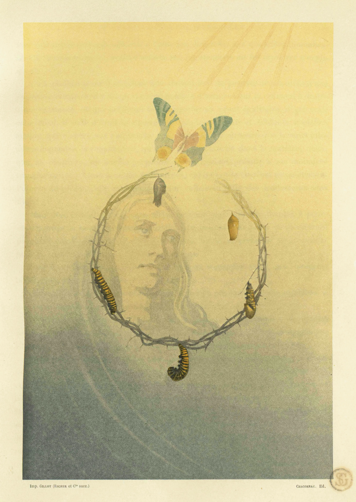
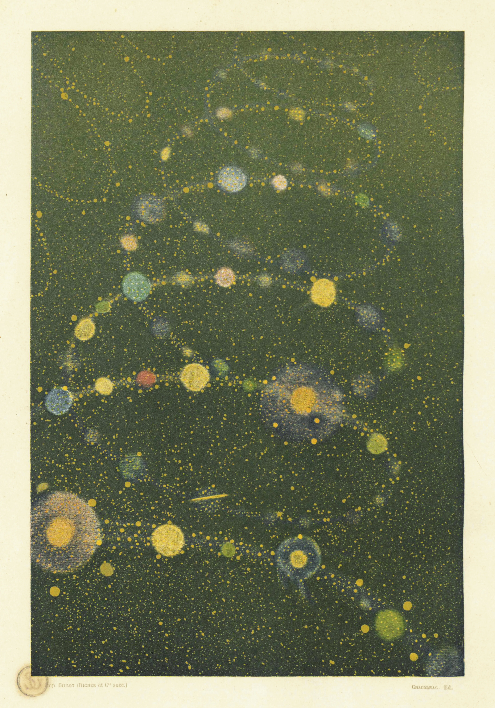
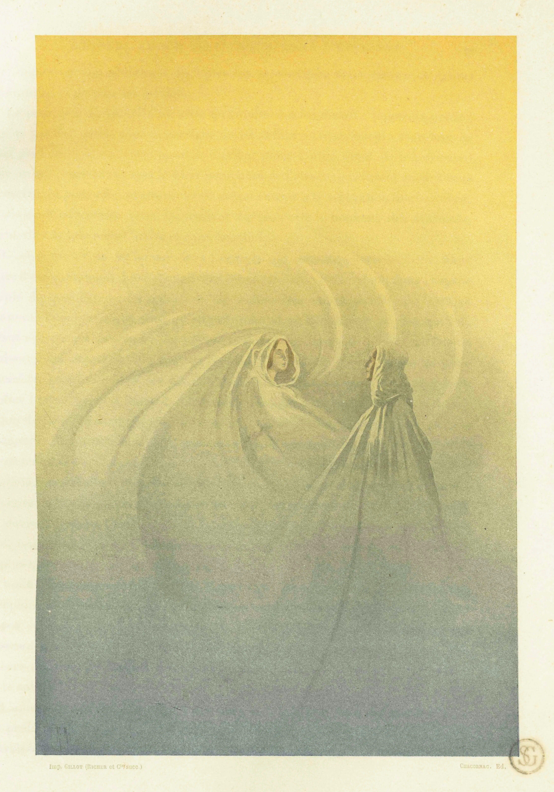
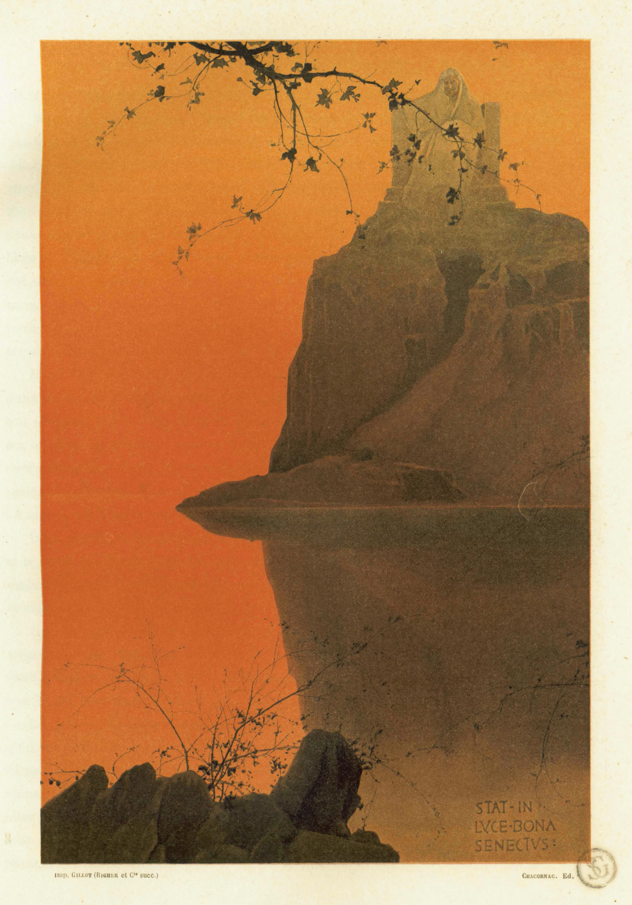
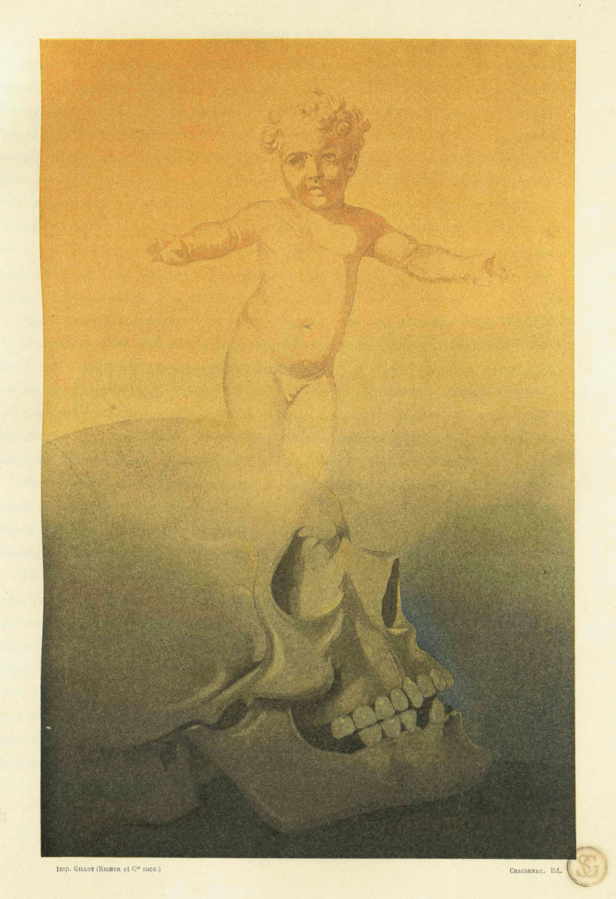
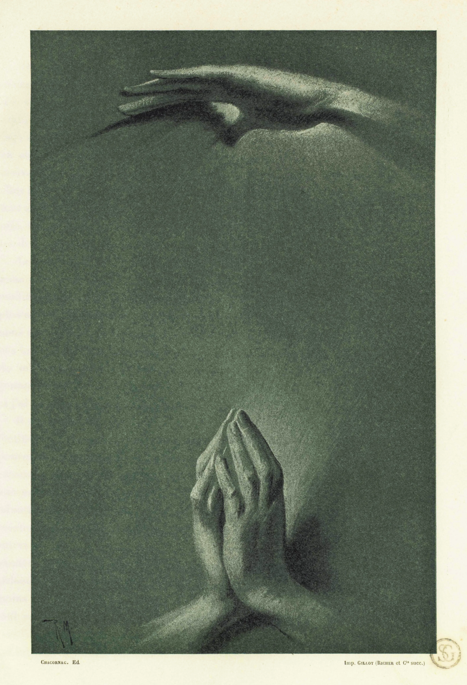

There are portals in the worn places of the world. In the spaces where the fabric thins from use. They are hard to see with the untrained eye, even harder to capture without disrupting their nature. The internet is the single greatest source of these phenomena, a nexus of links that only occasionally lead the user to their expected destination.
Using experimental portal capture technology, we are proud to present six stable class-M digi-portals in a secure OBSL-4 environment.
Though class-M manifestations seldom occupy the visible spectrum, our scientists have successfully translated their base frequencies into hex code. The images below are representational and only tangentially indicative of what awaits on the other side of the portal. Early attempts at deriving an auditory manifestation of the digi-portals led to mass casualties and an upgrade from OBSL-3 facilities*.
The upper left portal (Portal A) has shifted destination post-capture and now outputs an "About" page with information about the Ad Meliora Project and its origins. Unnervingly, we have no record of this page's existence prior to digi-capture of Portal A. Perhaps it wants us to know that is aware, and watching us even as we watch it.
As always, the user proceeds at their own risk when entering a digi-portal. The AMP disavows liability for any immediate or foreshadowed consequences of digi-portal travel and does not acknowledge the legal authority of any governing body. We are travelers on a higher road.
*We are currently hiring for our A/V team and are pleased to offer a comprehensive benefits package including short-term life insurance.
|  |  |  |
|  |  |  |